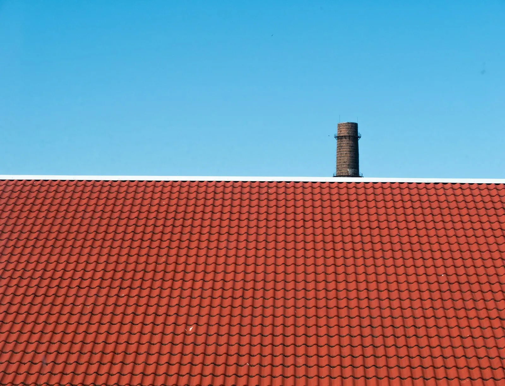
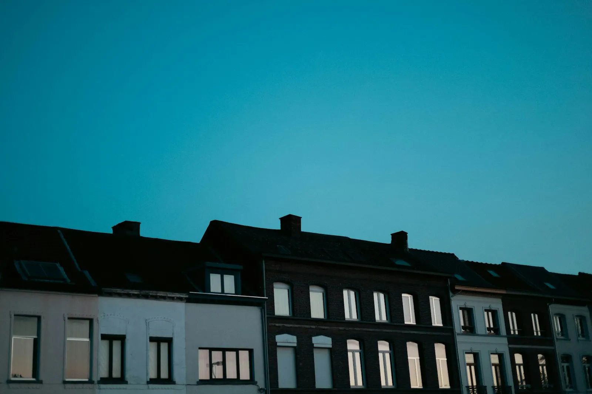
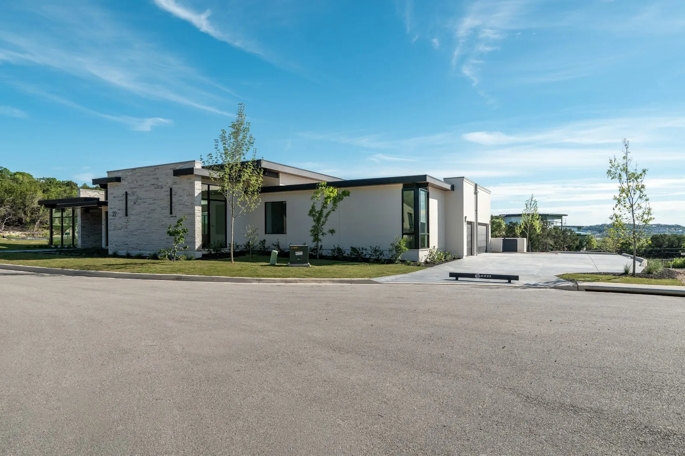
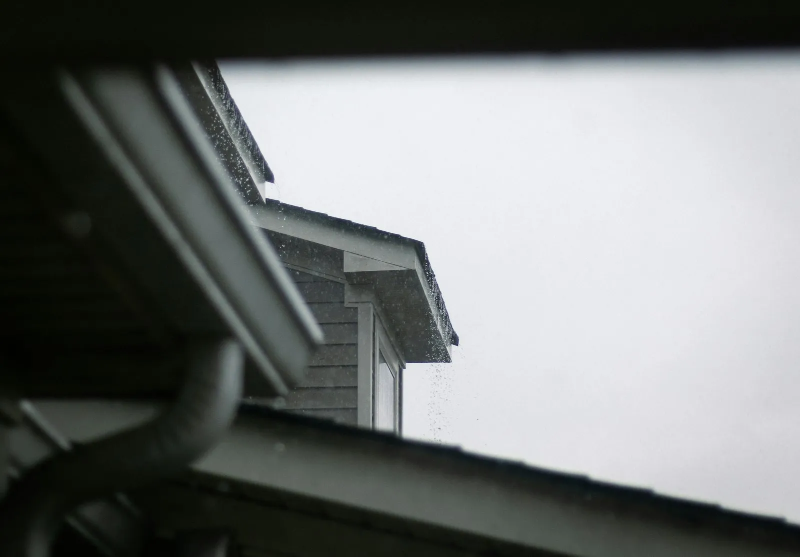
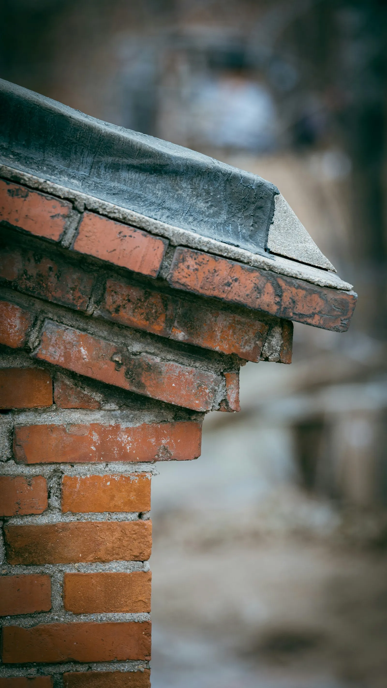
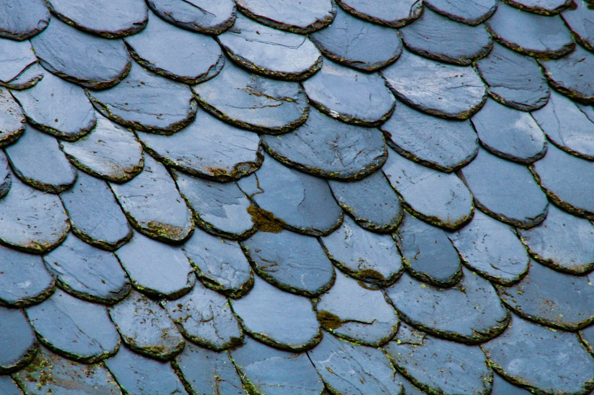
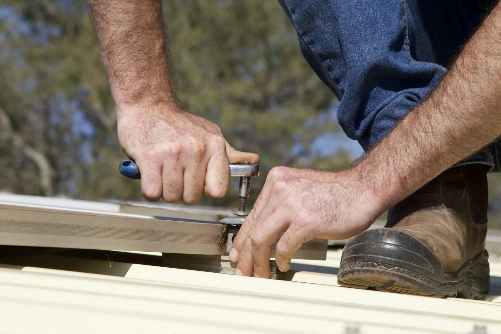

01Hellende dakenToits en pente
Pannen of leien vervangen, onderdak en panlatten vernieuwen.Remplacement de tuiles ou d'ardoises, sous-toiture et lattage.
Dakwerker Tienen herstelt, vernieuwt en onderhoudt daken in Tienen en de omliggende gemeenten. U legt uw vraag uit in de taal die u het liefst spreekt.Toiture Tirlemont répare, rénove et entretient les toitures à Tirlemont et dans les communes voisines. Vous expliquez votre demande dans la langue qui vous convient.

NL + FRVan een losse dakpan tot een volledig nieuw dak. Eerst kijken, dan een duidelijke prijs, dan pas beginnen.D'une tuile déplacée à une toiture complète. D'abord on regarde, ensuite un prix clair, et seulement après on commence.

01Pannen of leien vervangen, onderdak en panlatten vernieuwen.Remplacement de tuiles ou d'ardoises, sous-toiture et lattage.

02Nieuwe dakbedekking of het herstellen van een lek.Nouvelle étanchéité ou réparation d'une fuite.

03Reinigen, herstellen of volledig vervangen.Nettoyage, réparation ou remplacement complet.

04Aansluitingen rond schouwen, dakramen en randen.Raccords autour des cheminées, fenêtres de toit et rives.
Leg uw probleem uit zoals het u het best lukt. We komen ter plaatse, bekijken het dak en zeggen u eerlijk wat er moet gebeuren.
Expliquez votre problème comme vous le souhaitez. Nous passons sur place, examinons la toiture et vous disons honnêtement ce qu'il faut faire.
Geen verrassingen, geen vage afspraken.Pas de surprises, pas d'accords flous.
U legt uit wat er aan de hand is. We spreken een moment af om te komen kijken.Vous expliquez la situation. Nous fixons un moment pour passer.
We bekijken het dak en u krijgt een duidelijke prijs.Nous examinons le toit et vous recevez un prix clair.
Pas als u akkoord bent, beginnen we. Netjes, en de werf wordt opgeruimd.Nous commençons seulement avec votre accord. Proprement, et le chantier est rangé.


Bel ons. Ook buiten de kantooruren kan u proberen, bij een lek of stormschade.Appelez-nous. Vous pouvez aussi essayer en dehors des heures de bureau, en cas de fuite ou de dégâts de tempête.
Ja. U kan ons in het Nederlands of in het Frans bellen.Oui. Vous pouvez nous appeler en français ou en néerlandais.
Altijd. Zo klopt de prijs met wat er echt moet gebeuren.Toujours. Ainsi, le prix correspond à ce qu'il faut vraiment faire.
Vang het water op, neem foto's voor uw verzekering en bel ons zo snel mogelijk.Récupérez l'eau, prenez des photos pour votre assurance et appelez-nous au plus vite.
Ook in de gemeenten rond Tienen. Vraag het gerust.Aussi dans les communes autour de Tirlemont. N'hésitez pas à demander.
Ik maakte deze demo voor u om te tonen wat er kan. Na een kort gesprek maak ik er iets veel persoonlijkers van, helemaal naar uw wens.
Vrijblijvend. Ik kom langs of we bellen.
Op maat, op uw eigen domein.
Geen voorschot. U betaalt pas als alles klaar is.
Hosting, domeinnaam en kleine wijzigingen, zoals nieuwe openingsuren.
Omdat een voorbeeld meer zegt dan een mail. Zo ziet u meteen wat er kan, en het kost u niets.
Nee. Het gesprek is vrijblijvend. Vindt u het niks, dan is het daarmee gedaan.
Na ons gesprek staat uw site binnen 10 tot 14 dagen online.
Zeker. Uw domeinnaam kan gewoon blijven, de nieuwe site komt in de plaats van de oude.
Nee, dat doe ik op basis van ons gesprek. Eigen foto's zijn mooi meegenomen, maar niet nodig om te starten.